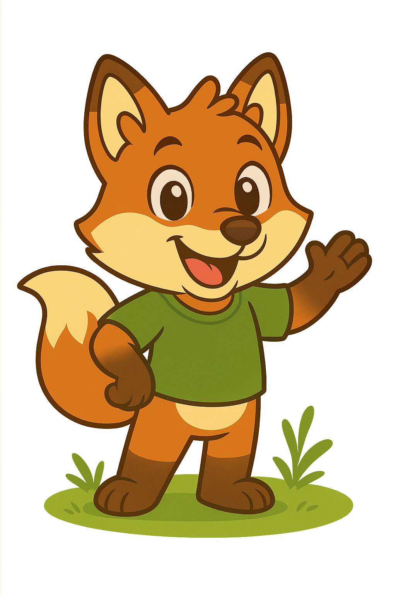

Do solo ao Sol ensina crianças a protegerem a natureza de forma interativa, cultivando ações que fazem a diferença na vida de todos!
Nosso mascote, Eco, é um simpático amigo da natureza que guiará as crianças em uma nova jornada de aventura e comprometimento com o mundo!
O tabuleiro do Solo ao Sol é um jogo educacional para todos.
Compre o seu tabuleiro para jogar com a sua família.
Jogar Agora 🎮 Jogar Agora 🎮 Jogar Agora 🎮 Jogar Agora 🎮 Jogar Agora 🎮 Jogar Agora 🎮Os jogos de tabuleiro e missões semanais ajudam você a aprender de forma criativa e inovadora.
Essas ideias educam para inovar e criar soluções sustentáveis!
Os projetos do Solo ao Sol têm como missão educar crianças e pessoas do mundo todo de forma criativa, para gerar um mundo mais sustentável.